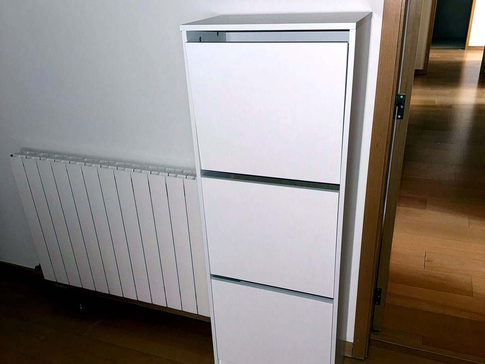
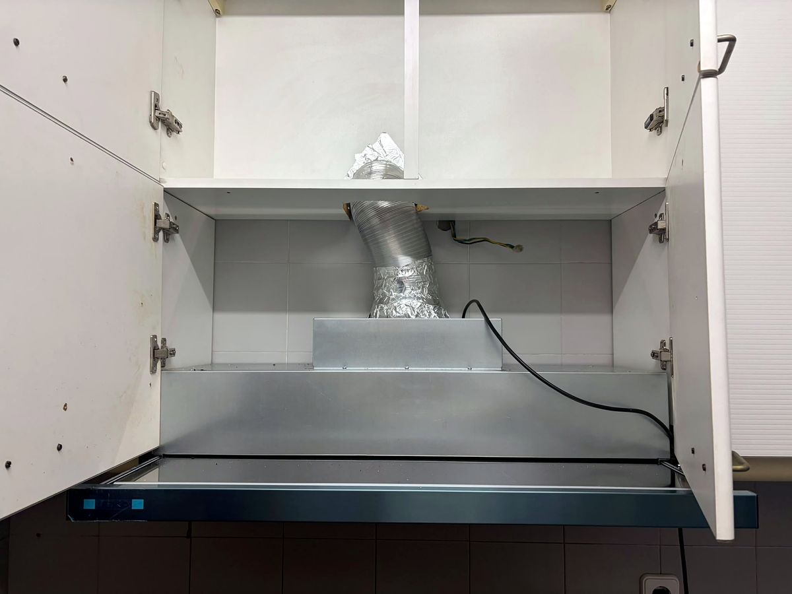
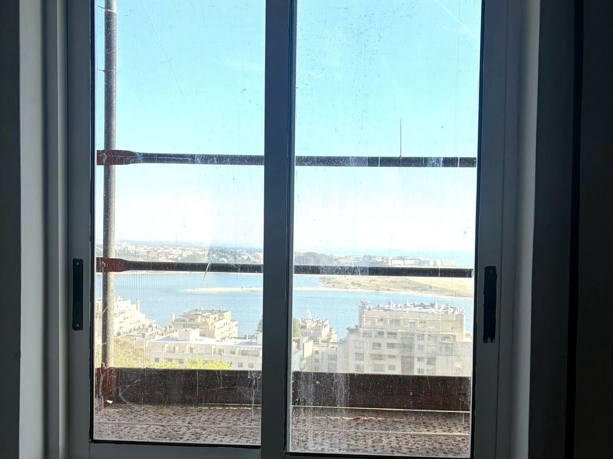
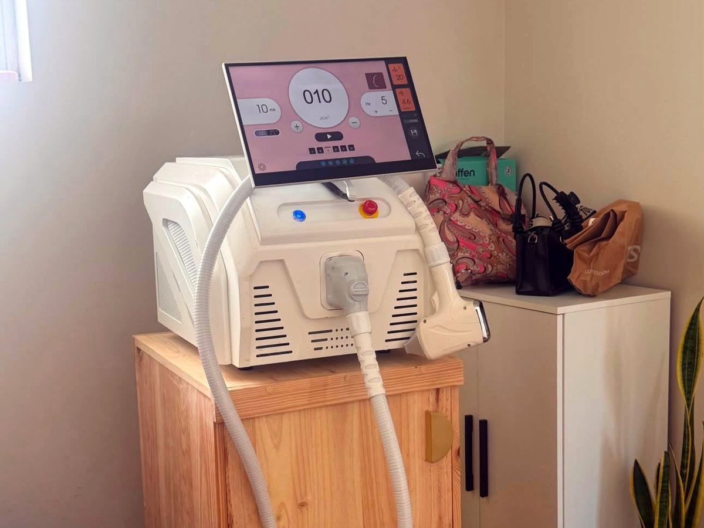
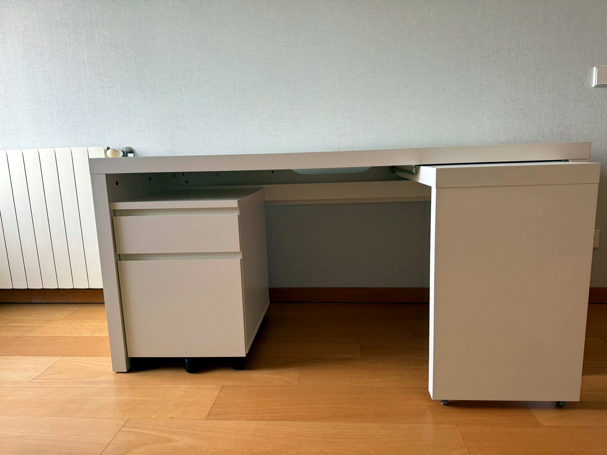

Carpintaria
ao milímetro
Do roupeiro embutido à cozinha lacada, do soalho ao deck exterior. Medimos, desenhamos, fabricamos e montamos — com acabamentos que duram.
Móvel comprado feito nunca encaixa numa parede fora de esquadria. À medida encaixa — e aproveita cada centímetro. A Dizarro trata o projeto de carpintaria de fio a pavio, e coordena com a eletricidade quando é preciso (iluminação de nicho, tomadas dentro do móvel).
O que fazemos
- Móveis à medida: cozinhas, quartos, salas, escritórios
- Roupeiros e armários embutidos, com interiores organizados
- Frentes lacadas, folheadas ou em melamina de qualidade
- Soalhos, rodapés, lambris e revestimentos de parede
- Portas interiores em madeira
- Decks, pérgulas e estruturas exteriores em madeira tratada
- Restauro e reparação de móveis e portas antigas
Como trabalhamos
Levantamento rigoroso (a laser quando a obra exige), desenho 3D para aprovar antes de cortar, fabrico e montagem com ferragens de marca — gavetões com extração total e travão, dobradiças com amortecedor.
Exemplo real
Cozinha na Maia: espaço pequeno e paredes fora de esquadria. Mobiliário lacado mate desenhado ao milímetro, ilha com zona de refeição e bancada em quartzo — 30% mais arrumação, sem obra de alvenaria.




